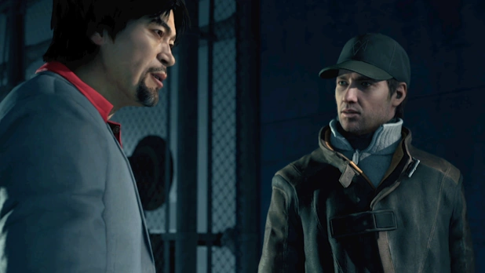
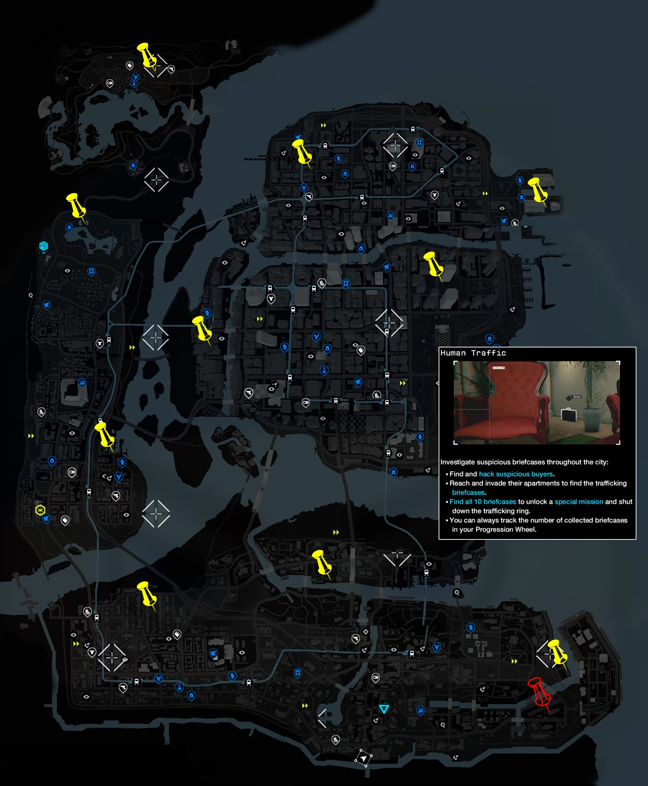

Act I Mission 1 : Bottom of the Eighth

Target
Enemies
Location
Purpose
At the very beginning, a cutscene shows Aiden Pearce and his mentor, Damien Brenks attempting to hack into the Merlaut hotel and steal a large sum of money. They are discovered and identified. An unknown man, who has discovered that Aiden and Damien were the hackers, orders a hitman named Maurice to kill Pearce, with his family as a potential target. Later that night, the car Aiden was travelling in with his nephew Jackson and niece Lena is attacked by two men riding motorcycles, one of whom is Maurice. Maurice fires a shot from a pistol, blowing a tire. The car flips over, and Lena is killed in the crash.
11 months later, Aiden corners Maurice during a baseball game at May Stadium. Aiden brutally interrogates Maurice but to no avail. He leaves Maurice alive and meets up with a fixer he hired, Jordi Chin, who stabs a gang member in the stomach. He warns Aiden that it is the bottom of the eighth, and the game will end soon. He has called the cops and plans to distract them by staging a shootout to lead the cops away from them. Aiden manages to sneak out of the stadium, but only after causing a blackout in the stadium, thanks to a hacker known as BadBoy17. The cops attempt to evacuate the stadium while dealing with the blackout, and Aiden escapes in the confusion.
Jordi leaves Aiden an escape vehicle and the player can choose to use it. Aiden must escape the police search area and return to his hideout. He knows that simple torture will not work and believes that Maurice, eaten by the guilt from the inside, will reveal who ordered the hit.
Act II Mission 12 : A Risky Bid

Target
Enemies
Location
Purpose
Aiden have to enter in the auction by usurpating the identity of Nicholas Crispin, an american who doesn't went back to US since 12 years. By passing in the Auction, he had to clone the signal of the card of Iraq, the leader of the Viceroys and also scramble the signal of the chip of "Poppy" who is a victim of Human trafficking

After Aiden reached the top of the auction, the game start and dialogue between Aiden and Lucky Quinn and at the same time Iraq approch near to Aiden Aiden took that opportunity to clone the signal of his card and Quinn ask some question to Aiden about what he thinks about his little "show" on the ground of them. But Quinn feels very mistrustful because he doesn't hear an accent in the voice of Crispin (Pearce)

After that, Aiden rescues Poppy and Quinn ordered to everyone in the Auction to find Crispin
Facts

